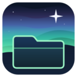

File manager
NorthRay Files
A file manager for Windows in the NorthRay look, with tools for creative work.
NorthRay Software · Preview
About
NorthRay Files is a file manager for Windows, being built in stages towards a full alternative to File Explorer. It browses your folders and drives with a sidebar of places, pinned folders and a folder tree, a breadcrumb address bar you can type or paste into, and Details and Icons views with Windows' own icons (and the pictures themselves for image files). You can copy, move, rename, make folders and delete to the Recycle Bin through Windows' own file operations, use Windows' own right-click menu, and work in tabs and two panes side by side, dragging between them. You can search a folder and everything in it as you type, or the whole PC through Windows Search. A preview pane shows the selected file, with pictures of Photoshop, Procreate and Krita files. Colour labels, tags, collections of files from anywhere and a gallery view help with creative work.
Features
- Browse folders and drives, with Home, Desktop, Documents, Downloads, Pictures, Music, Videos and This PC in the sidebar
- A breadcrumb address bar: click a part to go there, or type or paste a path (including network paths and %USERPROFILE%)
- Details and Icons views with Windows' own icons and file types; in Icons view, pictures show the image itself, turned the right way up; sort by name, date, type or size, in natural order
- Select with Click, Ctrl+Click, Shift+Click and the keyboard; type a name to jump to it
- Copy, cut, paste, rename (F2), new folder and delete to the Recycle Bin, through Windows' own file operations; Windows' own right-click menu; folders refresh themselves
- Drag and drop with other programs, both ways, and the Recycle Bin inside Files (restore, delete permanently, empty)
- Tabs (Ctrl+T) and two panes side by side (Ctrl+\); drag files between panes or onto a folder, and drag a folder to the sidebar to pin it
- A folder tree under This PC that opens to the folder you're in
- Search the folder and the folders in it as you type, or the whole PC through Windows Search; phrases, wildcards, kind: and ext:
- A preview pane, and pictures of Photoshop, Procreate, Krita and OpenRaster files (videos and PDFs where Windows has a thumbnail handler)
- Colour labels, tags and collections (groups of files from anywhere), searchable with tag: and colour:, and a Gallery view for art folders
- Folders load in the background, so even very large ones never freeze the window
- Hidden and protected system files stay hidden unless you choose to show them
What's new
Version 0.6.1 · 2026-11-14
- Fixed: buttons in question boxes (such as “Delete permanently?”) didn't respond to clicks when Windows' display scaling was above 100%.
- The sidebar fits short windows and large display scaling: the places, collections and labels scroll with the mouse wheel instead of running into the item count at the bottom, and the folder tree keeps room of its own.
Version 0.6.0 · 2026-11-14
- The Recycle Bin opens inside Files: what's in it, where each thing was deleted from and when, with Restore and Delete permanently (right-click, the Delete key, or the preview pane) and Empty the Recycle Bin. It uses Windows' own Recycle Bin, so it matches File Explorer; its right-click menu in the sidebar still offers File Explorer's view. If Windows doesn't list what's in it, Files says so and offers File Explorer.
- Drag and drop with other programs: drag files out of Files into any program that takes files from File Explorer (an email, a chat, an art program), and drop files from File Explorer or the desktop onto a folder, a pane, a collection or the sidebar in Files. Moves and copies follow File Explorer's rules (Ctrl copies, Shift moves).
Version 0.5.0 · 2026-11-14
- Colour labels: right-click anything and choose a colour (or pick one in the preview pane). It shows as a bar beside its name in Details and a dot in Icons and Gallery views.
- Tags: give files and folders as many tags as you like from the right-click menu or the preview pane, and take them off again. The sidebar's Tags button lists every tag; choosing one shows everything with it.
- Search by label: tag:dragon (or #dragon), tag:"two words", colour:red, mixed with the other search words. The colour dots in the sidebar do the same in one click.
- Collections: groups of files and folders from anywhere, without moving them. Make one from the sidebar or from “Add to collection”, drag things onto it, open it like a folder (the Folder column says where each thing really is), and rename or delete it from its right-click menu. Things that have gone missing are shown as missing.
- Gallery view (Ctrl+Shift+1 or the toolbar): big square pictures for art folders, the name over the picture when you point at it.
- Labels and collections are kept in NorthRay Files' own file, so the files themselves are never changed. They follow things renamed, moved or deleted in NorthRay Files; things moved by another program lose them.
- Long submenus (such as a long list of tags) have a search field too.
Version 0.4.1 · 2026-11-14
- A preview pane (Alt+P, the toolbar button or the menu): the selected file's picture, or the start of a text file, with its type, size and date, and Open. Several selected: how many and their size.
- Pictures of art files in Icons view and the preview pane: Photoshop (.psd and .psb, from the picture Photoshop saves with the file), Procreate, Krita (.kra) and OpenRaster (.ora).
- Videos and PDFs show the picture Windows' own thumbnail handlers make, as in File Explorer, where Windows has one for that kind of file.
- From search results, “Open its folder” in the preview pane goes to where a result is, with it selected.
- Publisher
- NorthRay Software
- Version
- 0.6.1
- Download
- 1.4 MB
- Requires
- Windows 10 or 11, 64-bit
- Account
- Not needed